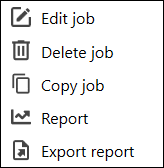
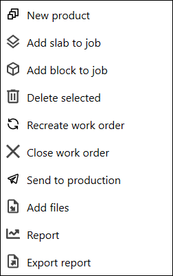

Per creare una nuova lavorazione in questo software MES, premere il pulsante NEW. Si aprirà una schermata in cui inserire le informazioni necessarie per registrare e gestire la lavorazione.
PULSANTI
AGGIUNGI Permette di creare una nuova lavorazione. Usarlo quando si vuole registrare un nuovo ordine o una nuova attività produttiva nel MES.
MODIFICA Permette di aggiornare i dati di una lavorazione già presente nel sistema.
COPIA Permette di duplicare una lavorazione già esistente, così da crearne una nuova partendo da dati già inseriti.
ELIMINA Permette di eliminare una lavorazione già presente. Usarlo solo quando la lavorazione non deve più essere gestita nel MES.
SELECT CONTACT Permette di selezionare il cliente associato alla lavorazione tra quelli già salvati nel sistema.
NUOVO CLIENTE Porta alla sezione in cui è possibile creare un nuovo cliente, se non è ancora presente nell’elenco.
COSTI EXTRA Quando è attivo, mostra campi aggiuntivi per inserire o visualizzare costi extra legati alla lavorazione.
GESTIONE FASI Permette di gestire le fasi della lavorazione, cioè le attività operative che compongono il processo produttivo.

MENU OPZIONI Permette di eseguire azioni sulla lavorazione selezionata, come modificarla, eliminarla, copiarla, generare un report o esportare il report.
NOTA
Questo menu è visibile facendo clic con il tasto destro del mouse sulla lavorazione selezionata.

MENU OPZIONI CREAZIONE Permette di gestire le opzioni disponibili durante la creazione o la configurazione delle fasi di lavoro.
NOTA
Questo menu è visibile facendo clic sui tre puntini in alto a destra nella schermata delle fasi di lavoro.